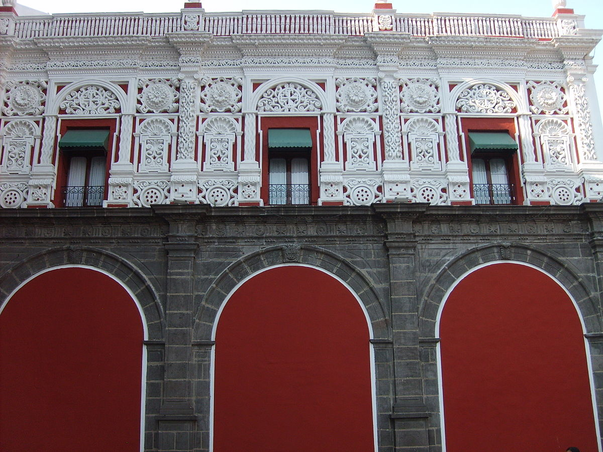

Información
Ubicado en 5 de Mayo 409, Centro Histórico Puebla, Pue. México C.P. 72000
Tel. y Fax (222) 232.47.20
Entrada gratuita
Las visitas son guiadas
Horario de 10 A. M. A 4 P. M
Lunes cerrado.
El mes de enero de cada año permanece cerrado para mantenimiento.